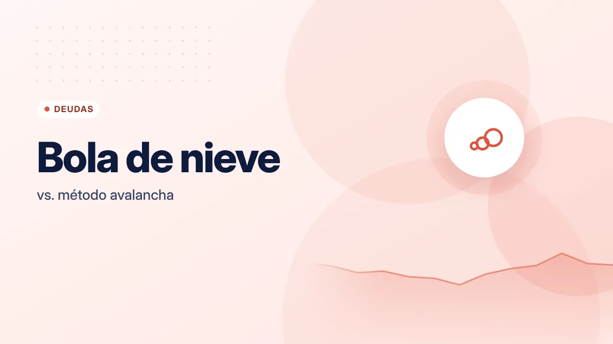
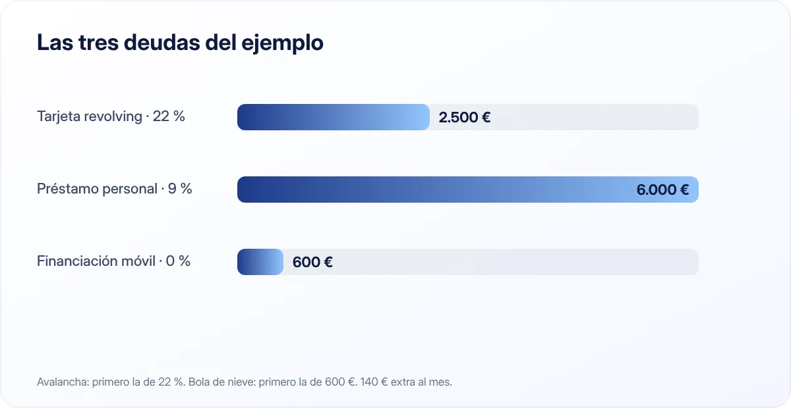

Cómo salir de deudas: método bola de nieve vs. método avalancha
Tener varias deudas a la vez agota. Un plan claro para atacarlas en orden es la forma más rápida de recuperar el control.

Puntos clave
- Avalancha: pagas primero la deuda con el interés más alto. Es la que menos intereses te cuesta.
- Bola de nieve: pagas primero la deuda más pequeña. Da victorias rápidas y ayuda a no rendirse.
- En ambos casos pagas el mínimo en todas y destinas todo el dinero extra a una sola.
Antes de empezar: haz inventario
No puedes atacar lo que no ves. Haz una tabla con todas tus deudas: tarjetas de crédito, préstamos personales, financiación de compras, préstamos del coche, dinero que debes a familiares. De cada una apunta:
- Saldo pendiente.
- Tipo de interés (TAE o TIN; si dudas, consulta qué son el TIN y la TAE).
- Cuota mínima mensual.
La hipoteca normalmente se deja fuera de este plan: suele tener un interés más bajo y un plazo muy largo.
El método avalancha
Ordenas las deudas de mayor a menor tipo de interés. Pagas la cuota mínima en todas y todo el dinero extra que puedas lo destinas a la que tiene el interés más alto. Cuando la liquidas, sumas lo que pagabas por ella a la siguiente de la lista.
Ventaja: matemáticamente es el método que menos intereses te hace pagar en total.
Inconveniente: si la deuda más cara es también la más grande, puede pasar mucho tiempo antes de que liquides la primera, y es fácil desmotivarse.
El método bola de nieve
Ordenas las deudas de menor a mayor saldo, sin mirar el interés. Pagas el mínimo en todas y todo el extra va a la más pequeña. Cuando la liquidas, su cuota se suma a la siguiente, y así la "bola" crece.
Ventaja: liquidas deudas enteras muy pronto. Cada deuda eliminada es una victoria que te anima a seguir.
Inconveniente: pagarás algo más de intereses que con la avalancha.
Un ejemplo práctico

Supón que tienes estas tres deudas y puedes dedicar 450 € al mes en total a pagarlas:
| Deuda | Saldo | Interés anual | Cuota mínima |
|---|---|---|---|
| Tarjeta revolving | 2.500 € | 22 % | 80 € |
| Préstamo personal | 6.000 € | 9 % | 180 € |
| Financiación del móvil | 600 € | 0 % | 50 € |
Las cuotas mínimas suman 310 €, así que tienes 140 € extra cada mes.
- Con la avalancha, los 140 € extra van a la tarjeta (22 %). Es la deuda que más te cuesta cada mes que pasa.
- Con la bola de nieve, los 140 € extra van a la financiación del móvil (600 €). La liquidas en unos cuatro meses y después destinas 190 € (140 + 50) extra a la tarjeta.
En este caso la diferencia de intereses entre los dos métodos es pequeña, porque la deuda pequeña no tiene interés y se liquida muy rápido. Cuando las deudas son más parecidas en tamaño y muy distintas en interés, la avalancha ahorra bastante más.
¿Cuál elegir?
- Elige avalancha si eres constante y te motivan los números: ver cuánto ahorras en intereses.
- Elige bola de nieve si ya has intentado salir de deudas y lo has dejado, o si tienes muchas deudas pequeñas.
- Híbrido: liquida primero una o dos deudas muy pequeñas para coger impulso y después pasa a la avalancha.
El mejor método es el que vas a mantener hasta el final. La diferencia entre ambos suele ser mucho menor que la diferencia entre tener un plan y no tenerlo.
Cómo encontrar dinero extra
- Revisa tu presupuesto. Una revisión de suscripciones o de la factura del móvil puede liberar 30–60 € al mes.
- Destina ingresos puntuales. Pagas extra o la devolución de la Renta pueden eliminar una deuda entera.
- Aplica temporalmente un presupuesto estricto. Unos meses con el método de los sobres aceleran mucho el proceso.
Cuidado con las tarjetas revolving
Las tarjetas revolving permiten pagar una cuota fija pequeña, pero los intereses suelen ser muy altos y la mayor parte de la cuota puede irse en intereses. Si tienes una, normalmente debería ser la primera en tu lista. Valora cambiar la modalidad de pago a "fin de mes" o a una cuota mayor, y deja de usarla mientras la pagas.
¿Y la reunificación de deudas?
Consiste en agrupar varias deudas en un solo préstamo. Puede bajar la cuota mensual, pero a menudo alarga el plazo y aumenta los intereses totales, y puede incluir comisiones o exigir garantías. Antes de firmar, compara el coste total y lee bien las condiciones.
Mientras pagas, no generes deuda nueva
Ten un pequeño colchón de unos cientos de euros para imprevistos. Así, una avería no te obliga a volver a la tarjeta. Cuando termines con las deudas, el dinero que destinabas a ellas puede ir a completar tu fondo de emergencia.
Si sientes que la situación te supera, busca ayuda: las asociaciones de consumidores y los servicios de atención al cliente bancario pueden orientarte.
En resumen
Haz inventario, paga el mínimo en todas y concentra el dinero extra en una sola deuda: la más cara (avalancha) o la más pequeña (bola de nieve). Elige el método que vayas a mantener y no generes deuda nueva por el camino.
Fuentes consultadas
Este artículo es informativo y no constituye asesoramiento financiero, fiscal ni jurídico personalizado. Las cifras son orientativas y pueden cambiar; consulta las fuentes oficiales y, si lo necesitas, a un profesional. Cómo elaboramos nuestras guías.